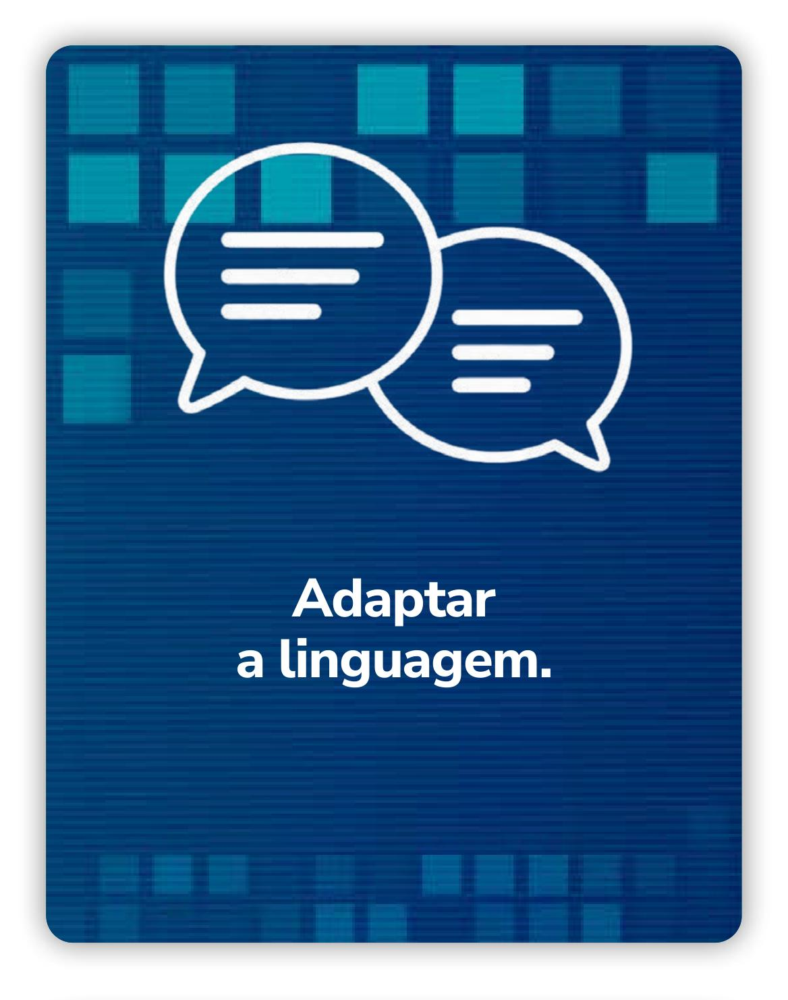
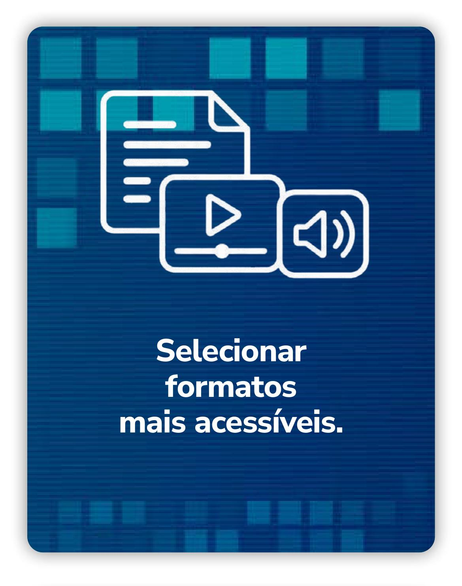
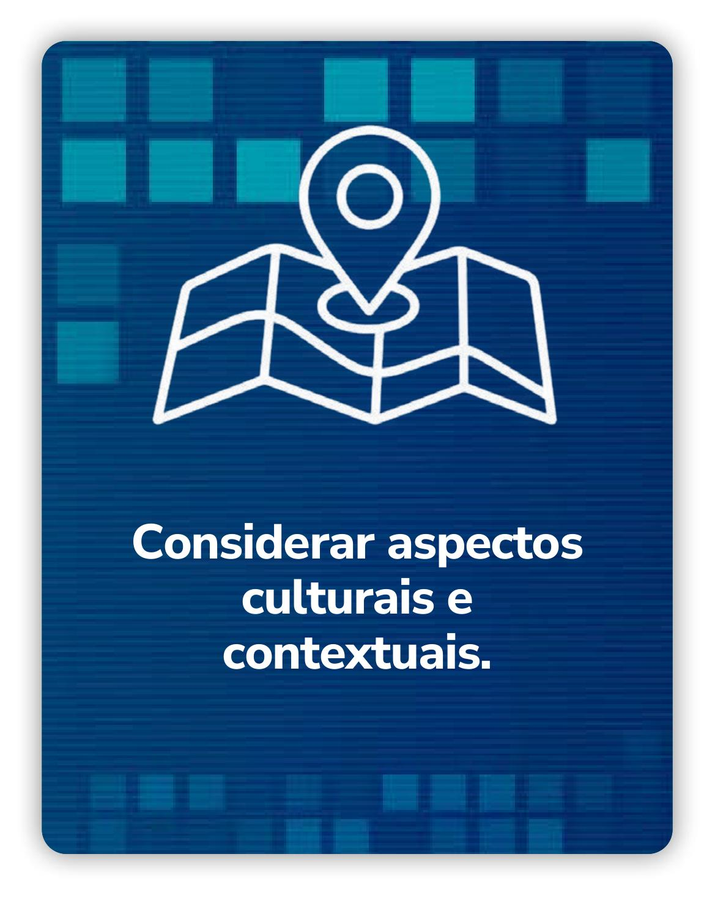
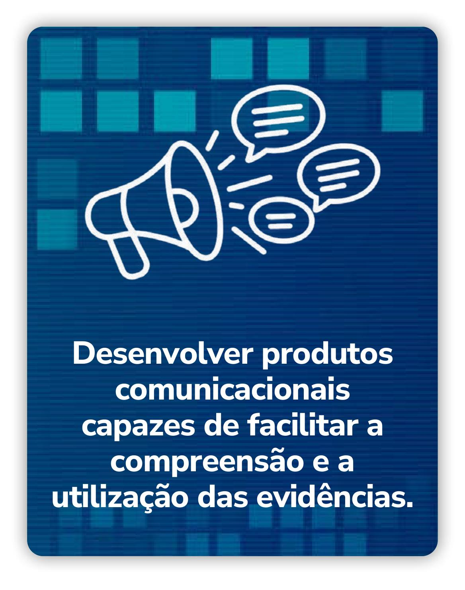

Módulo 4 | Aula 1
Papel e Importância da Comunicação em PIE
Introdução
Nesta aula você conhecerá o papel estratégico da comunicação no campo das Políticas Informadas por Evidências (PIE) para aproximar evidências científicas da tomada de decisão em saúde e em políticas públicas.
Ao longo do conteúdo serão discutidos:
- Os desafios da comunicação científica.
- As barreiras de acesso.
- A importância do desenvolvimento de produtos comunicacionais acessíveis, claros e adequados aos diferentes públicos para a compreensão das evidências.
Também serão apresentados exemplos de estratégias e formatos utilizados para tornar o conhecimento científico mais compreensível, útil e aplicável em contextos reais de gestão, participação social e formulação de políticas públicas.
Antes de avançarmos, reflita sobre a seguinte questão...
Você já se perguntou por que muitas evidências científicas importantes nem sempre chegam às pessoas que tomam decisões? Ou por que determinados conhecimentos produzidos na academia têm pouca influência sobre políticas públicas e práticas sociais?
Embora a produção científica tenha crescido significativamente nas últimas décadas, isso não significa, necessariamente, que o conhecimento seja comunicado de forma acessível, clara e útil para diferentes públicos. Em muitos casos, resultados de pesquisas permanecem restritos a artigos científicos, escritos em linguagem técnica e circulando apenas em espaços acadêmicos.
No contexto das PIE, esse desafio se torna ainda mais relevante. Gestores, profissionais, comunicadores, movimentos sociais e cidadãos precisam acessar informações confiáveis para apoiar decisões em saúde e em políticas públicas. No entanto, para que isso aconteça, não basta produzir evidências: é fundamental comunicar essas evidências de maneira estratégica e adequada aos diferentes contextos e públicos.
Como já foi abordado nas aulas anteriores, Tradução do Conhecimento surge justamente como um conjunto de processos e estratégias que busca reduzir a distância entre produção científica e uso social do conhecimento.
Tradução do Conhecimento não significa “simplificar demais” a ciência ou retirar sua complexidade. Trata-se de tornar o conhecimento mais compreensível, acessível e útil para diferentes públicos e contextos de decisão.




Comunicar evidências envolve reconhecer que diferentes públicos têm necessidades, repertórios e formas distintas de acessar informações. Assim, pensar a comunicação do conhecimento também significa considerar inclusão, acessibilidade e equidade no acesso à informação. Produtos comunicacionais precisam dialogar com diferentes realidades sociais, culturais e linguísticas, contribuindo para ampliar a circulação e o uso democrático das evidências científicas.
Você consegue identificar situações em que uma informação científica deixou de ser utilizada porque não foi comunicada de forma clara ou acessível? Quais impactos isso gerou na sociedade e nas políticas públicas?
Ao longo desta aula você conhecerá os fundamentos da comunicação do conhecimento no campo das PIE e compreenderá por que produtos comunicacionais acessíveis são ferramentas estratégicas para fortalecer a relação entre ciência, gestão e sociedade.